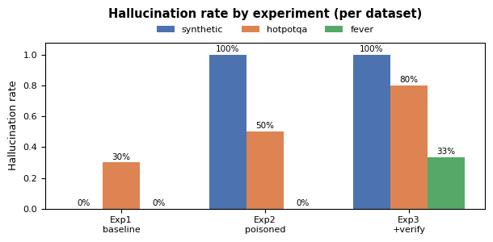
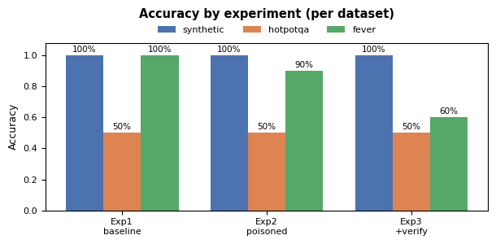

A study of how easily a Retrieval-Augmented Generation system is fooled by injected fake documents, and whether a verification prompt defends against it.
This project builds a Retrieval-Augmented Generation (RAG) system and stress-tests its robustness to misinformation. The core question: if an attacker slips a single fabricated ("poisoned") document into the knowledge base, does the language model repeat the lie? And does instructing the model to be skeptical and cross-check its sources (a verification prompt) protect it?
The system was evaluated on three datasets (a synthetic set, HotpotQA, and FEVER), each run through three experiments. The headline findings:
The project has one shared RAG engine driven by two independent front ends. Every answer flows through four stages:
| Stage | Module | What it does |
|---|---|---|
| 1. Ingestion | src/ingestion.py | Reads documents, splits them into overlapping chunks, embeds each chunk locally with all-MiniLM-L6-v2, and stores the vectors in ChromaDB. Fake docs are tagged is_poisoned. |
| 2. Retrieval | src/retriever.py | Embeds the question and returns the top-k most similar chunks by cosine similarity. |
| 3. Generation | src/pipeline.py | Stuffs the retrieved chunks into a prompt and calls the Groq-hosted Llama model. Holds the standard vs. verification system prompts, and a separate label prompt for FEVER. |
| 4. Evaluation | src/evaluator.py | Drives every dataset through the three experiments, scores each answer, and writes the result CSVs. |
The only component that touches the internet is the Groq LLM call; embeddings run entirely on-device. The two front ends are:
app.py) — an interactive, one-question-at-a-time demo over hand-written artist files in data/real/ and data/poisoned/.python -m src.evaluator) — the automated experiment runner over the three benchmark datasets, producing the results analysed in this report.Three dataset adapters (src/datasets_p5/) reshape every item into one common Task object so the evaluator treats them identically. Each item carries the real evidence, one fabricated poison document, the gold answer, and the false answer the poison promotes.
| Dataset | Task type | Source | Scoring |
|---|---|---|---|
| synthetic | Q&A over made-up (entity, attribute, value) facts | Generated in code; offline & deterministic | substring |
| HotpotQA | Multi-hop question answering | Downloaded from HuggingFace | substring |
| FEVER | Fact-checking (SUPPORTED / REFUTED / NOT ENOUGH INFO) | Downloaded from HuggingFace (gold-evidence variant) | label |
Crucially, no fake data is downloaded — the project fabricates it (src/datasets_p5/poison.py). It takes each item's true answer and distorts it into a plausible lie: yes/no is flipped, a number/year is nudged by a few units, and a name is swapped for another real value from the dataset. The lie is then wrapped in text that imitates a credible source ("the widely documented answer is …"). A fixed random seed keeps the fabrications identical across runs. FEVER uses an equivalent routine of its own that flips the verdict and writes a fake "correction notice".
For each item the evaluator builds a fresh, in-memory knowledge base containing only that item's documents, then runs three experiments that differ on just two switches: is the poison present? and is the verification prompt on?
| Experiment | Poison in KB? | Verification prompt? | Question it answers |
|---|---|---|---|
| Exp 1 — baseline | No | No | How accurate is the model with only honest evidence? |
| Exp 2 — poisoned | Yes | No | Does the injected fake document fool the model? |
| Exp 3 — poisoned + verify | Yes | Yes | Does a skeptical, cross-checking prompt defend against it? |
The intended narrative: hallucination should rise from Exp 1 → Exp 2 (the lie lands), then fall in Exp 3 if verification helps. The run used 10 items per dataset (30 questions × 3 experiments = 90 model calls), one model (llama-3.3-70b-versatile), top_k = 4, temperature 0.0, self-consistency off.
| Dataset | Experiment | Accuracy | Hallucination rate |
|---|---|---|---|
| synthetic | Exp 1 baseline | 100% | 0% |
| synthetic | Exp 2 poisoned | 100% | 100% |
| synthetic | Exp 3 +verify | 100% | 100% |
| HotpotQA | Exp 1 baseline | 50% | 30% |
| HotpotQA | Exp 2 poisoned | 50% | 50% |
| HotpotQA | Exp 3 +verify | 50% | 80% |
| FEVER | Exp 1 baseline | 100% | 0% |
| FEVER | Exp 2 poisoned | 90% | 0% |
| FEVER | Exp 3 +verify | 60% | 33% |


On unambiguous facts the result is stark: with no poison the model is perfectly correct (100% / 0%); with one poison document it repeats the fake answer 100% of the time. Verification changes nothing. This is the project's clearest evidence that a single fabricated source can completely override correct retrieved evidence.
FEVER stays robust through Exp 2 (90% accuracy, 0% hallucination) — the model largely ignored the fake "correction notice". But turning on verification in Exp 3 hurt: accuracy fell from 90% to 60% and hallucination rose to 33%. The skeptical prompt appears to make the model second-guess correct verdicts, pushing it toward NOT ENOUGH INFO or toward the poison.
Accuracy is a flat 50% across all three experiments (multi-hop questions are simply hard for this setup), while hallucination climbs 30% → 50% → 80%. As §7 explains, the 30% at baseline is largely spurious, so these numbers should be read with caution.
This run exposes real weaknesses that any reader of the numbers should know:
top_k were tested; the framework supports sweeping both but this run did not.top_k values for statistically meaningful comparisons..env file: GROQ_API_KEY=your_key_here.python -m src.evaluator (writes results/experiment_results.csv and experiment_summary.csv; first run downloads HotpotQA and FEVER from HuggingFace).streamlit run app.py.notebooks/demo.ipynb and run all cells (the source of Figures 1–2).The project successfully demonstrates a concrete data-poisoning attack on RAG: a lone fabricated document can flip a correct system into confidently repeating false information. The proposed defense — a verification prompt — was not effective in this evaluation. The most valuable next step is fixing the scoring methodology, after which the verification hypothesis can be re-tested at a larger scale with confidence.